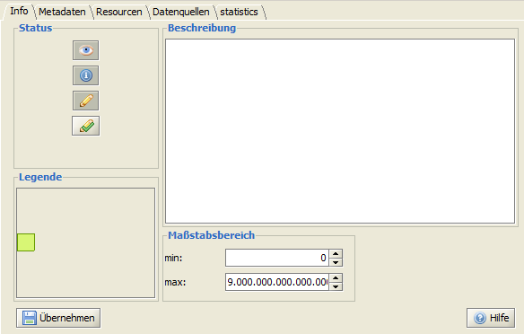
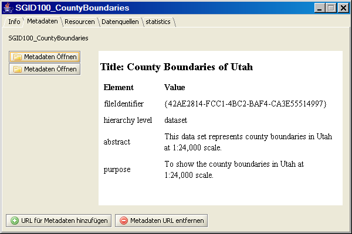
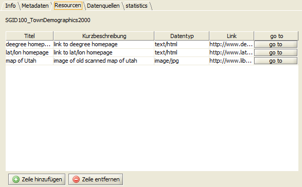
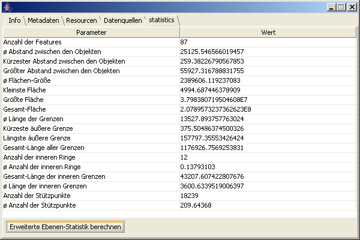

Informationen zur Kartenebene aufrufen
Nachdem eine Ebene in der Ebenenansicht selektiert wurde, kann über das
Kontextmenü durch das Klicken auf
 Ebenen Information
ein neues Fenster mit weiterführenden Informationen geöffnet werden.
Innerhalb des Registers
Info
werden Angaben zu Status, Beschreibung, Maßstabsbereich und Legende gemacht. Die
Legendensymbole sind hier nicht bearbeitbar, allerdings können die Beschreibung und
der Maßstabsbereich verändert werden.
Durch Klicken auf
Übernehmen
werden die Änderungen Übernommen. Ebenen Information
ein neues Fenster mit weiterführenden Informationen geöffnet werden.
Innerhalb des Registers
Info
werden Angaben zu Status, Beschreibung, Maßstabsbereich und Legende gemacht. Die
Legendensymbole sind hier nicht bearbeitbar, allerdings können die Beschreibung und
der Maßstabsbereich verändert werden.
Durch Klicken auf
Übernehmen
werden die Änderungen Übernommen.

Innerhalb des Registers Metadaten können jeweils neue Datenquellen über
eingepflegt oder über
entfernt werden. Bereits bestehende
Verknüpfungen können über eingesehen
werden.

Innerhalb des Registers
Ressourcen
können über  Verweise zu Text/html oder
Bilddateien eingefügt werden, durch das Klicken auf
werden diese Verweise in einem separaten Browserfenster geöffnet. Verweise zu Text/html oder
Bilddateien eingefügt werden, durch das Klicken auf
werden diese Verweise in einem separaten Browserfenster geöffnet.

Innerhalb des Registers
Datenquellen
werden Informationen zu Namen und Pfadangabe der Datenquelle, der BBox (Ausdehnung), dem
Maßstabsbereich (hinsichtlich der Anzeige) und des Loadings (lazyLoading)
bereitgestellt.
Innerhalb des Registers
Statistik
besteht die Möglichkeit eine erweiterte Berechnung der statistischen Angaben
für diese Ebene durchzuführen.

|